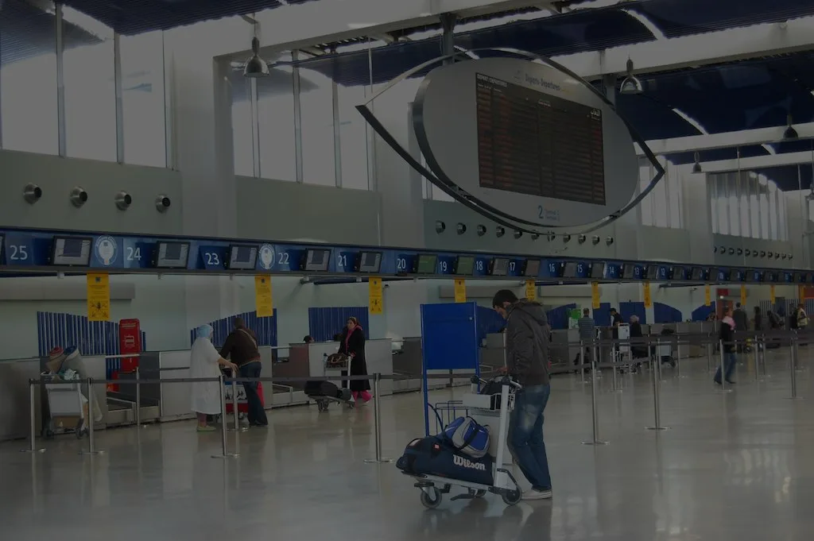
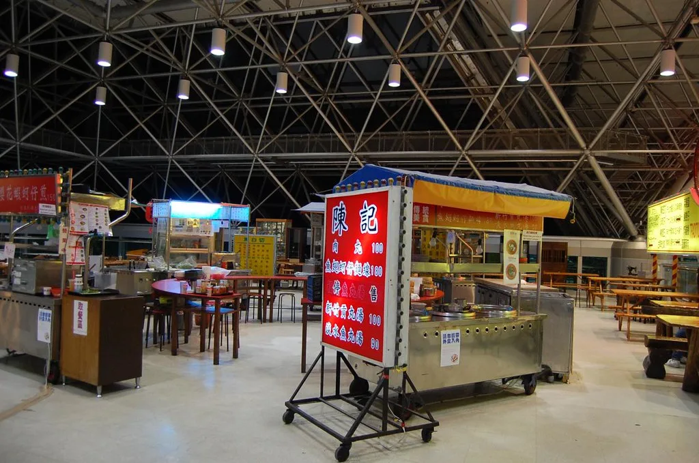

30일 새벽 인천국제공항에서 항공사 발권 시스템을 연결하는 공용 네트워크에 장애가 발생해 출국장이 한동안 혼란을 겪었다. 장애는 이날 오전 4시 30분쯤 시작됐으며, 여러 항공사가 공동으로 쓰는 발권 연계망인 이른바 '에어링크' 계통에서 문제가 생긴 것으로 파악됐다. 공항 운영이 본격적으로 시작되는 새벽 시간대에 하필 문제가 터지면서, 이른 출발 비행기를 타려던 승객들이 가장 먼저 혼란을 겪었다.
이 네트워크를 함께 쓰는 대한항공과 진에어 등 국내 항공사를 포함해 모두 13개 항공사의 발권 속도가 새벽 시간부터 눈에 띄게 느려지기 시작했다. 통신 장애가 간헐적으로 이어지면서 체크인 카운터마다 대기줄이 길어졌고, 평소보다 수속 시간이 몇 배로 늘어나는 상황이 이어졌다. 공항 측도 상황을 파악하는 과정에서 초기에는 혼선이 있었던 것으로 전해지며, 현장 안내가 늦어지자 승객들의 불만도 함께 커졌다.

시간이 지나면서 국내 항공사들의 시스템은 오후 들어 점차 정상을 되찾았지만, 중국동방항공과 중국남방항공, 중국국제항공 등 중국계 항공사 3곳은 발권 업무가 사실상 중단되는 상황까지 치달았다. 자동화된 발권 시스템이 작동하지 않자 해당 항공사 직원들은 탑승 수속을 일일이 손으로 처리해야 했다. 승객 신원과 예약 정보를 하나하나 수기로 대조하는 방식이다 보니 한 명을 처리하는 데도 평소보다 훨씬 긴 시간이 걸렸고, 이 때문에 카운터 앞 대기줄은 오전 내내 쉽게 줄어들지 않았다.
이 때문에 상하이와 선전 등 중국 주요 도시로 향하는 항공편 38편이 지연됐고, 한때 탑승을 기다리던 승객 약 1200명의 발이 묶였다. 수속이 늦어지면서 출발 시간에 맞춰 게이트로 이동하지 못한 승객들의 불편이 하루 종일 이어졌다는 전언이다. 해외로 출장이나 여행을 떠나려던 승객들 사이에서는 갑작스러운 지연으로 환승 일정이 꼬이거나 현지 도착이 늦어질 수 있다는 불안감도 적지 않았던 것으로 알려졌다.

인천국제공항공사는 장애 발생 이후 네트워크 복구 작업을 이어갔고, 이날 오후 5시를 기점으로 모든 시스템 장애가 복구됐다고 밝혔다. 공사 측은 복구 이후 체크인 수속이 정상적으로 이뤄지고 있다고 설명했다. 새벽부터 시작된 장애가 완전히 해소되기까지는 열두 시간 넘게 걸린 셈이어서, 하루 중 가장 혼잡한 시간대 상당 부분이 장애 영향권에서 벗어나지 못했다. 다만 정확히 어떤 이유로 공용 네트워크에 문제가 생겼는지에 대한 구체적인 설명은 아직 충분히 나오지 않은 상태다.
발권 네트워크처럼 여러 항공사가 공동으로 의존하는 공용 시스템에 장애가 발생하면 특정 항공사의 문제가 공항 전체의 혼잡으로 번질 수 있다는 점이 이번 사태로 다시 확인됐다. 하루 넘게 이어진 혼란 끝에 시스템은 정상화됐지만, 비슷한 장애가 성수기나 명절 연휴 등 승객이 몰리는 시기에 재발할 경우 피해 규모가 더 커질 수 있다는 우려도 함께 제기된다. 공용 네트워크에 의존하는 구조 자체를 바꾸기는 어렵더라도, 장애 발생 시 승객 안내와 수기 처리 인력을 얼마나 빠르게 투입할 수 있는지가 피해를 줄이는 관건이 될 것으로 보인다.